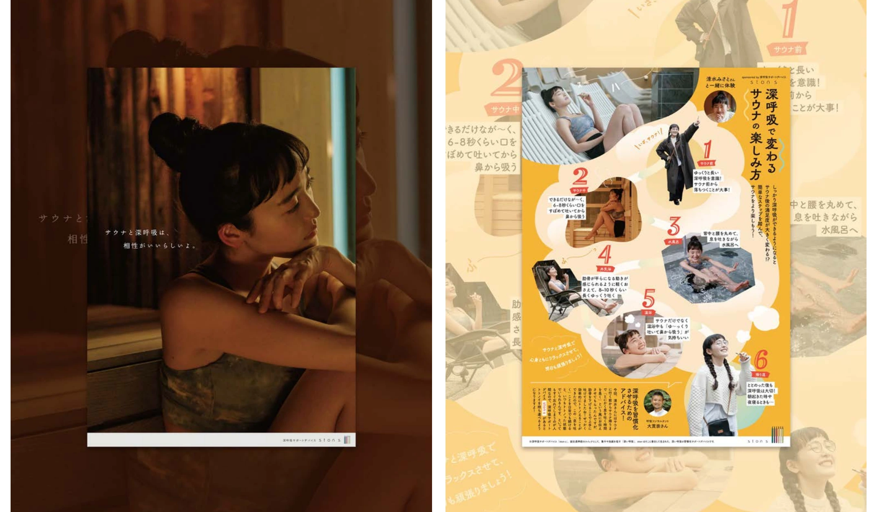

健康・スポーツ
stons

PROJECT INFORMATION
公式サイトを見る ↗（新しいタブで開く）BREATHER株式会社の「stons」。企画・設計、デザイン、撮影を担当した実績です。
01 / 背景とテーマ
輪郭を与える
呼吸は、意識しなければ通り過ぎてしまうものです。呼吸の習慣化をサポートするデバイス「stonS」のポスター制作にあたり、サウナと深い呼吸の親和性に着目しました。
02 / SCHEMAの担当範囲
全体を整える
SCHEMAは企画からディレクション、デザイン、撮影までを担当。1枚目は清水みさとさんを起用し、サウナ室の静かな時間に呼吸を意識する瞬間を映画的なトーンで表現。「サウナと深呼吸は、相性がいいらしい。」というシンプルなコピーを添えています。
03 / 取り組みの視点
枠組みをひらく
2枚目は、サウナ前・中・後の呼吸を整えることでより充実した体験になることを、ビジュアルと解説で伝える構成に。サウナ室でふと目に留まり、呼吸を意識するきっかけになる。初心者から上級者までが受け取れる形にひらきました。